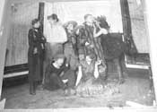
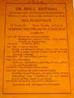
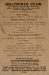
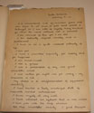

Index
|
Section II. The Crucible of Modern Free
Speech:,
1890-1948
|
Subsection B.
Cultures
of Democracy
|
| Group 1: Bohemian Heyday |
A.
Jack Jones and the Dill Pickle Club
|
Item 1: Dill Pickle Lending
Library
(NL#45), repro?
|

|
Item 2: Photo of Dill Pickle
Door
(closed) (NL#97)
|

|
Item 3: A Night in Bohemia:
Dill
Pickle Masked Ball (NL#25)
|

|
Item 4: Anti-War Dance (NL#116)
|

|
Item 5: Is There Sin, Crime or
Law Breaking? Was Christ Black? Sunday Night 8:30pm (NL#30)
|
|
Item 6: Dil Pickles in Costume:
Barbary Coast Costume Ball (NL#112)
|

|
B.
Popular Education and Entertainment in the Open Forums
|
Item 1: Composite of Dill
Pickle
Event notices (NL)
|
|
Item 2: The Causes of Prison
Riots
(NL#79)
|

|
Item 3: Ben Reitman’s Social
Outcast
Clinic (NL#60)
|
|
|
Item 4:
Making the Grade in the Jazz Age (NL#92)
|

|
| Item
5: Abraham Lincoln School Comes to You, part 2 (NL#492) |
|
|
Item 6:
Abraham Lincoln School Comes to You, part 3
(NL#493)
|
|
|
Item 7: Ben
Reitman and Jacob Coxey at the Hobo
College, photo (NL#187)
|
|
|
use in reproduction:
Daniel A. Tullman, hobo and former head of
Hobo College, addressing the Bug Club at Washington Park, Chicago
(NL#188)
|
|
C.
Emergence of modern sexuality and Prohibition (flappers, drag shows,
etc.)
|
Item 1: How Should Women Treat
Men
(NL#75)
|

|
Item 2: The Liberty Belle,
She’s
Cracked (NL#44)
|

|
Item 3: Flyer for Magnus
Hirschfeld,
"Homosexuality"/Elizabeth Davis, “Will Amazonic Women Usurp Men’s
Sphere”
(NL#55-56) [choose one side]
|
 
|
|
Item 4: Shall
Society Accept Intermediates (NL#57)
|
|
|
Item 5: Olive
Hirsell (NL#93)
|

|
|
Item 6:
Sexual Reform on a Scientific Basis by Dr.
Magnus Hirschfeld, the Einstein of Sex (NL#192)
|

|
|
Item 7: Mary
MacLane intensely staring, photo
(NL#537)
|

|
|
Item 8: Mary
MacLane, I Await the Devil's Coming,
original manuscript of "The Story of Mary MacLane" (NL#540)
|

|